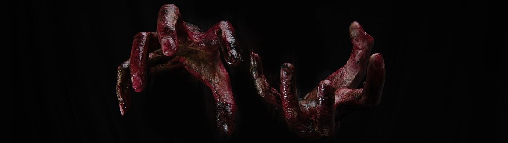
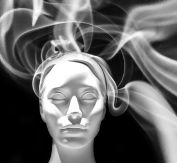
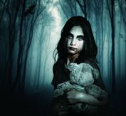
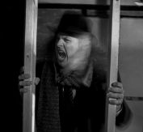
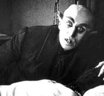

Vampires
Vampires, those immortal creatures who traverse the thin line between life and death, have captivated human imagination for centuries. These mythical beings, with their insatiable thirst for blood and eternal existence, have left an indelible mark on folklore, literature, and popular culture.
Origins
The concept of vampires is not bound by any single culture or era but has found its place in the myths and legends of diverse civilizations. While specific details vary, certain common themes emerge. In Eastern European folklore, for instance, vampires were often associated with disease and death, believed to be revenants who returned from the grave to torment the living. In other traditions, such as the Chinese and Indian, similar undead creatures exist, showcasing the universality of vampire-like entities in human storytelling.
Common Traits
Throughout the ages, vampires have been defined by a set of core characteristics.
Immortality stands at the forefront, endowing them with the gift of eternal life. However, this immortality comes at a price: the need to feed from the living. There are varies forms in which a vampire may feed, but one of the most popular methods seen is the act of blood sucking, which serves as both sustanance and a source of power for vampires. This chilling attribute forms the foundation of their sinister reputation.
Nocturnality is another shared trait among vampires. They are creatures of the night, shunning daylight, which often proves fatal to them in many depictions. This vulnerability to sunlight adds an element of peril to their existence. Additionally, vampires are often described as undead, with pale skin and devoid of typical vital signs like a heartbeat or breath.
Specific vulnerabilities and weaknesses are characteristic of vampire lore. Garlic, wooden stakes driven through the heart, holy water, and crosses are among the arsenal of deterrents used against them. These vulnerabilities add an element of suspense and danger to vampire narratives.
Shape-shifting abilities are commonly ascribed to vampires, enabling them to assume various forms, including bats, wolves, or even mist. This shapeshifting prowess facilitates their ability to move stealthily and evade capture.
Vampires are often depicted as possessing mesmerizing or hypnotic powers. They can exert control over their victims, making them more susceptible to the vampire's approach and feeding. Additionally, superhuman attributes, such as incredible strength, speed, agility, and heightened senses, are frequently attributed to vampires. These abilities set them apart from ordinary humans and enhance their predatory nature.
Immunity to human diseases and ailments is another facet of vampire mythology. This immunity contributes to their enduring existence, free from the ravages of illness.
In many vampire stories, the creation of new vampires is an integral aspect of the mythos. A human who has been bitten and drained of blood by a vampire may undergo a transformation, becoming a vampire themselves and thus continuing the lineage.
Finally, psychic abilities, including mind reading, telepathy, or telekinesis, are occasionally granted to vampires, adding layers of complexity and intrigue to their characterizations.
Different Types of Vampires
The presence of various types of vampires in folklore, literature, and popular culture can be attributed to a combination of factors, including the rich tapestry of cultural diversity, the imaginative creativity of storytellers, and the ever-evolving nature of the vampire myth. Different cultures and regions have crafted their own unique vampire legends, reflecting local beliefs and traditions. Writers, artists, and filmmakers have seized upon the vampire myth as a canvas for their creative endeavors, reinterpreting and reimagining vampires to suit their narrative needs. Social and cultural contexts have shaped the themes and characteristics associated with vampires, allowing them to remain relevant across different eras. Audience preferences, genre blending, and symbolic interpretations further contribute to the multiplicity of vampire types, ensuring that these enigmatic creatures continue to evolve and resonate with diverse audiences worldwide.
Blood Drinkers
 Blood Drinkers, also known as Sanguine Vampires, have a constant need to consume fresh human (or animal) blood in order to maintain their undead state. They cannot be satisfied with blood from deceased animals, and some beliefs suggest that they can be vulnerable if the blood they consume carries strong religious or loving influences or if the human they feed on has recently consumed large amounts of garlic. This type of vampire is the most prevalent and can be found in the folklore and myths of cultures spanning the globe, from ancient civilizations like Babylon and Greece to regions as diverse as Asia and the Balkans, where the modern legend of blood-sucking vampires originated. According to numerous myths, a single feeding of blood can sustain a vampire for up to two weeks.
Blood Drinkers, also known as Sanguine Vampires, have a constant need to consume fresh human (or animal) blood in order to maintain their undead state. They cannot be satisfied with blood from deceased animals, and some beliefs suggest that they can be vulnerable if the blood they consume carries strong religious or loving influences or if the human they feed on has recently consumed large amounts of garlic. This type of vampire is the most prevalent and can be found in the folklore and myths of cultures spanning the globe, from ancient civilizations like Babylon and Greece to regions as diverse as Asia and the Balkans, where the modern legend of blood-sucking vampires originated. According to numerous myths, a single feeding of blood can sustain a vampire for up to two weeks.
Psi-Vampires
Psi vampires, often referred to as psychic vampires or energy vampires, are a concept that differs from the traditional blood-drinking vampires commonly seen in folklore and popular culture. These kinds of vampires do not inflict physical harm on their donors or willing victims. Instead, they possess the ability to draw life force, which sustains their existence. This psionic capability allows them to extract life force from both individual victims and larger crowds of people. Typically, those being fed upon are unaware of the process, and the consequences of this feeding may manifest as both short-term and long-term fatigue, with exceedingly rare instances leading to fatal outcomes.
Emphatic Vampires
Empathic Vampires represent a unique category among vampires. They are known for their ability to draw sustenance from the emotions of people in their vicinity. Typically, they feed on positive energies like happiness and love, but they can also harness negative emotions such as anger and fear. Some empathic vampires may intentionally evoke these darker emotions in their victims, while others simply feed off the emotions already present in their surroundings.
Soul Vampires
Soul vampires are believed to possess the ability to feed on the spiritual or psychic energy of others, which is sometimes referred to as the "soul" or "life force." The belief is that soul vampires can drain or absorb this energy from their victims, potentially leaving them feeling spiritually depleted. It is beleived that feeding can shorten the life span of the victim or even kill the victim in the instance of excessive feeding. This concept is rooted in the idea that all living beings emit or possess a form of psychic or spiritual energy, and soul vampires are thought to tap into and consume this energy for their own benefit.
Genetic Vampires
Genetic vampires refer to individuals who are either scientifically engineered to exhibit vampire-like traits or are born as the offspring of vampires and humans, inheriting some, but not all, of the classic vampire powers. These individuals often represent a unique blend of human and vampire characteristics. Unlike traditional vampires, they may not possess the complete set of vampire abilities, such as immortality or the need to drink blood, but they can manifest certain vampiric traits, such as enhanced strength, heightened senses, or the ability to heal more rapidly.
Insane Vampires
Insane Vampires, also known as Malkavian Vampires, represent a subset of vampires who have been transformed into their immortal state, whether willingly or involuntarily, and subsequently develop mental illnesses. This transformation process can give rise to vampires who exhibit erratic and unpredictable behavior, making them challenging to control or understand within the vampire community. In other works of fiction, insane vampires exhibit erratic behavior not because of the result of vampire conversion, but due to the burden of immortality, centuries of isolation, or the trauma associated with their vampiric existence. Such portrayals add complexity to vampire characters, exploring the psychological toll of immortality and the challenges of enduring through the ages while maintaining a semblance of sanity.
Disfigured Vampires
Disfigured vampires, also known as Nosferatu vampires, is a concept that represents a subset of vampires who bear physical deformities or grotesque features due to their vampiric condition. Unlike the traditional portrayal of elegant and alluring vampires, disfigured vampires often grapple with the consequences of their transformation. This transformation may result in altered physical appearances, including pallid skin, elongated fangs, or other vampiric traits that set them apart from humans. These disfigurements can be seen as a reflection of the price they pay for immortality, symbolizing the loss of their human identity and the dark, otherworldly nature of their existence.
Literary & Movie Vampires
While vampires have ancient roots, their portrayal in contemporary literature and media has evolved significantly. Perhaps the most iconic vampire character in literature is Count Dracula from Bram Stoker's "Dracula," published in 1897. This seminal work introduced many of the enduring characteristics of vampires and set the stage for countless adaptations. In recent decades, vampires have undergone transformations in fiction and popular culture. Authors like Anne Rice and Stephenie Meyer have reimagined these creatures, introducing complex and sympathetic vampire characters. Rice's "The Vampire Chronicles" delves into the moral and emotional dilemmas faced by vampires, while Meyer's "Twilight" series explores forbidden love between a human and a vampire. These narratives have challenged traditional vampire archetypes, blurring the lines between good and evil.